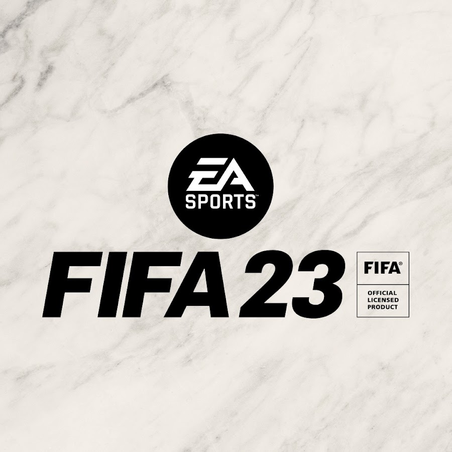
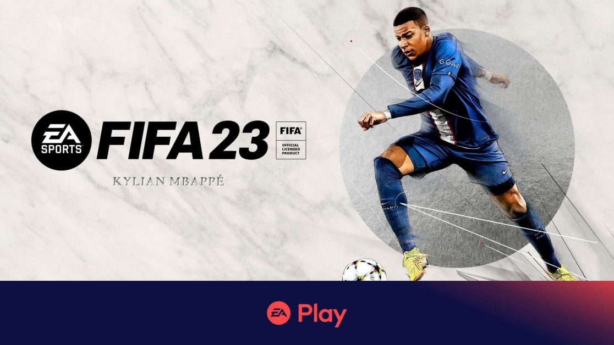

FIFA — серія відеоігор жанру футбольних симуляторів, що розробляється студією EA Canada,
яка входить в
корпорацію Electronic Arts. Ігри серії видаються під брендом EA Sports.
Щороку виходить нова версія
гри, в
яку вносяться зміни, які відбулися у футболі за минулий рік. Як правило, нова версія симулятора FIFA
виходить на початку осені.
Крім того, існують спеціальні ігри серії, присвячені Чемпіонату світу чи
Європи з
футболу, FIFA Street, FIFA Manager, інші. Electronic Arts володіє великою кількістю ліцензій футбольних ліг,
чемпіонатів, команд та гравців, що виступають в цих чемпіонатах. Останнім релізом EA на цей момент є FIFA
23, доступна майже на всіх сучасних ігрових платформах.
Історія
Перша гра серії FIFA вийшла в 1993 році й мала назву FIFA International Soccer. В грі був
використаний вид
поля
3/4, в той час, як в усіх інших іграх використовувався звичайний 2D-вид зверху. В FIFA 96, завдяки ліцензії
FIFPro, почали використовуватись справжні прізвища футболістів. Поява технології EA «Virtual Stadium»
дозволяла
отримати 3D зображення стадіону з 2D футболістами.
В FIFA 97 використовувались полігональні моделі, був
доданий
режим гри в приміщеннях. В FIFA 98: Road to World Cup геймери отримали покращену графіку, геймплей та всі
матчі
Чемпіонату світу 1998. Пізніше EA покращила підтримку Direct3D, і уже в FIFA 99 кожна команда мала свою
унікальну форму.
Починаючи з 2000 року кожна гра серії FIFA піддавалась серйозній критиці серед фанатів
відеоігор, за слабкі оновлення геймплею, в той час як EA займалась вдосконаленням графіки та додаванням
нових
ліг. З 2000-х років FIFA наштовхнулась на конкуренцію на ринку футбольних симуляторів в особі Pro Evolution
Soccer, від розробника Konami.
В 1997 році Electronic Arts купили в FIFA на створення офіційних ігор Чемпіонату Світу, яка діє до сьогодні.
Аналогічна серія до Чемпіонатів світу. Пропонується пограти на Чемпіонаті Європи.
Також є серія Fifa street, де можна пограти у вуличний футбол.
Платформа на яких виходить гра.
- Micsosoft Windows
- Xbox
- Sony Playstation
- PSP
- PSV
- Java
- Nintendo DS
- Wii
- iOS
- Android
Fifa23

FIFA 23 — це футбольна відеогра-симулятор, розроблена підрозділами EA Vancouver й EA Romania та видана
Electronic Arts. Це 30-та й остання гра серії FIFA, яка була випущена 30 вересня 2022 року для Microsoft
Windows, Nintendo Switch, PlayStation 4, PlayStation 5, Xbox One, Xbox Series X/S і Google Stadia. Гравці,
які передзамовили Ultimate Edition, отримали доступ на три дні раніше, і могли грати з 27 вересня.
Гра є останньою в серії FIFA, оскільки співробітництво між EA та FIFA закінчується. Майбутні футбольні ігри
EA
будуть виходити в межах серії EA Sports FC.